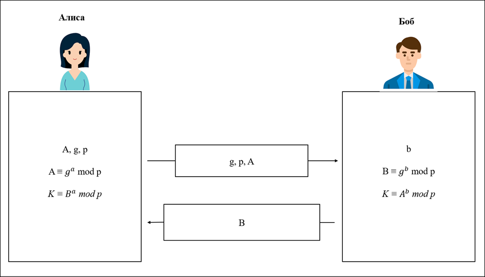

Диффи-Хеллман алгоритмі ашық кілт алмасу әдісі болып табылады. Ол екі тараптың ортақ құпия кілтті ашық байланыс арқылы қауіпсіз түрде бөлісуіне мүмкіндік береді.
Алиса мен Боб өздеріне жабық кілттер (a және b) таңдайды.
Жария кілттер есептеледі:
Алиса: A = ga mod p
Боб: B = gb mod p
Алиса мен Боб ортақ құпия кілтті есептейді:
K = Ba mod p , K= Ab mod p
Алиса мен Боб келесі параметрлерді пайдаланады:
Алиса жабық кілт ретінде a = 6, ал Боб b = 15 таңдайды.
A, B, K мәндерін табыңыз. Осы мәндерді табатын Python-да бағдарлама құрыңыз.